CMC Wizard FAQs
Frequently Asked Questions
I have created a Work Order in FrameReady and now I want to generate a .WZ2 file to send to Wizard FrameShop. When I select the option to create a .WZ2 file in FrameReady, it tells me that the file could not be created on the disk.
-
If you are having trouble creating a Wizard FrameShop .WZ2 file in FrameReady, while following the documentation available on our website, there are a few things to look at.
If the file cannot be created on the disk, then make sure that you have created your WIZ folder on your C:/ Drive on your Windows computer and that it has the correct permissions of Read/Write. The WIZ folder on your C:/ drive is where the .WZ2 files are saved and opened by the Wizard FrameShop software. Please refer to the documentation for Wizard on our FrameReady website for the steps on how to create this folder.
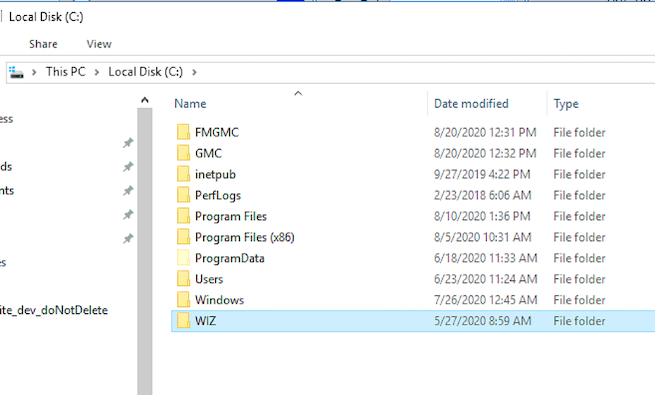
I am wanting to use the Wizard FrameShop integration in FrameReady on a Mac computer to export .WZ2 files. I know that the Wizard FrameShop is for Windows only, but is it possible to export .WZ2 files on my Mac and then move them to a Windows computer with Wizard FrameShop installed on it?
-
Yes! It is now possible for you to do this in FrameReady.
-
We have added functionality to the current version of FrameReady that will allow you to use the Perform > Wizard - Create .WZ2 File option. This will export a .WZ2 file on your Mac that you can move to a Windows computer with FrameShop installed on it. You will first need to create the Wizard folder on your Mac hard drive for the .WZ2 files to export to.
The path must be: Macintosh HD/Library/WIZ
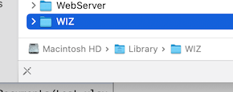
-
Make sure that the newly created WIZ folder has the correct Read/Write permissions.
Right-click the folder and choose Get Info. At the bottom of the Info window are the folder permissions. You need to set all three options to Read/Write so that the folder has the correct permissions for the software to be able to create the .WZ2 files.
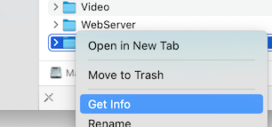
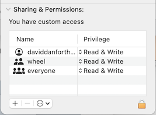
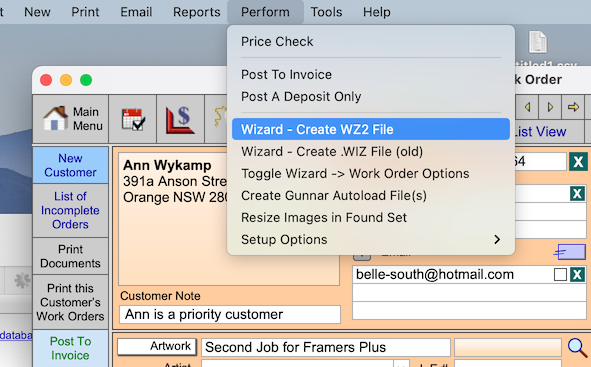
-
When the WIZ folder is created and the permissions are correctly set, you can run the Wizard - Create WZ2 file option from the Perform menu. This will generate the WZ2 file, in the new folder, and a pop up dialog lets you know the process is complete when it is finished.
You can now take the WZ2 file that was generated in the folder and move it to a computer running Wizard FrameShop. The file will be named with the Work Order number for the work order that you generated the file on.


I am using the “Wizard FrameShop to Work Order” option to create my design first in Wizard and then push it into FrameReady using the “Back to POS” button in Wizard FrameShop. I have more than one opening in my Wizard FrameShop design. Will FrameReady account for the additional opening / openings?
-
Yes, FrameReady will account for the additional openings in your Wizard FrameShop design.
-
FrameReady uses a scripted algorithm to pull in the design information and then to calculate the full width and height of your openings (based on where they are placed on the design). It will account for the extra opening in the opening width and height in the FrameReady Work Order as well as input the amount of extra openings on the design in the Extra Openings field on the Work Order.
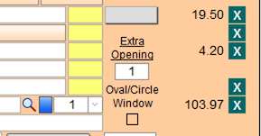
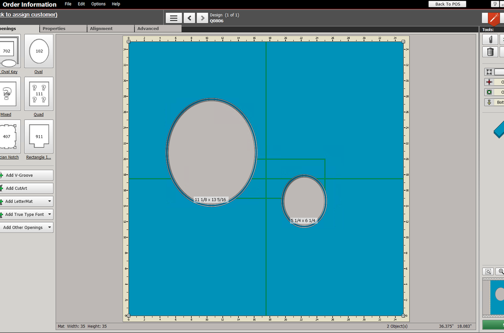
I am using the Wizard FrameShop visualization editor with the FrameReady integration and I am bringing in a Frame and some mats in with my design using the “Back to POS” button. If I select a frame in Wizard FrameShop that I currently do not have in FrameReady set up as a Price Code, will it allow me to use that Frame when the design is imported into a Work Order in FrameReady?
-
The Frame and Mat codes will import into the fields in the FrameReady Work Order but, if you do not have a Price Code currently set up for those Frames or Mats, then you will see an alert in FrameReady letting you know that you currently don’t have a code set up for them.
-
The Work Order will not price properly until you set up a Price Code record in your system for this code that you brought in from Wizard FrameShop. The system will not automatically add the code into FrameReady for you, you will need to set the code up in Price Codes in order for the Work Order to properly price and function correctly.
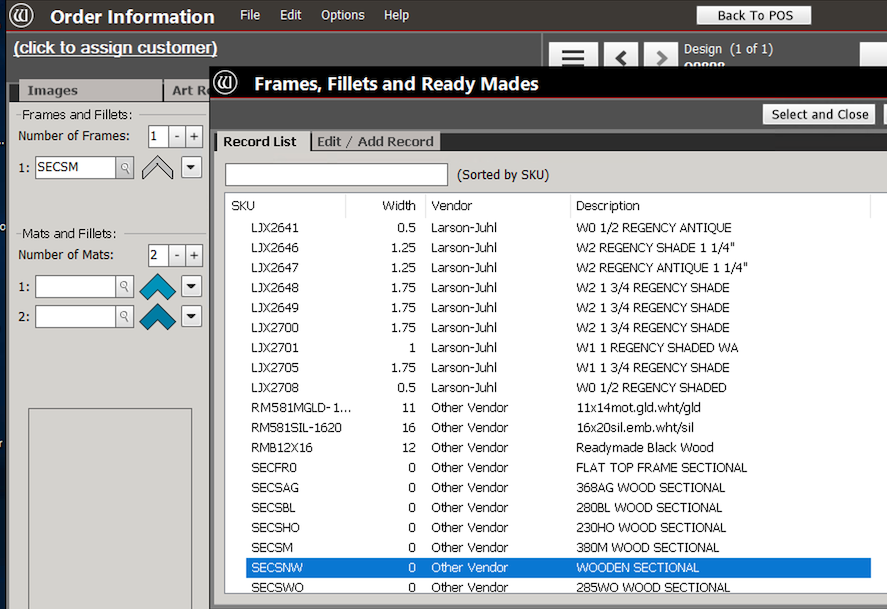
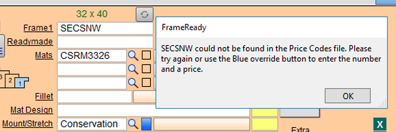
-
FrameReady will also notify you, in the Frame Notes field, of any Frames or Mats that have been imported from Wizard FrameShop that are not yet set up in. your Price Codes file. In the image below, you can see that FrameReady has added a note with the Frame or Mat SKU letting you know that it still needs to be added as a Price Code item in FrameReady.
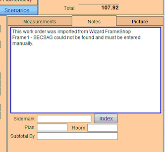
I was using the Wizard integration that was in FrameReady before version 12 which was available for Wizard cutters before the 8000 / 9000 series -- and now, after upgrading, the integration is not working anymore. Do I have to upgrade my Wizard cutter machine to work with the new Wizard FrameShop integration or can I still use the old integration? Is that integration still available in FrameReady?
-
The old Wizard MatDesigner integration was replaced in FrameReady 12 with the new Wizard FrameShop integration. However, we have recently added the old Wizard MatDesigner integration back in for users who still need it.
-
In order to activate the old Wizard integration settings, go to the Main Menu, open up the Work Order Options tab, click the More Options... button. In the Work Order Options window, open the WO Defaults tab. Select one of the two options for the old Wizard integration:
1.) “Wizard (old)”
2.) “Wizard MatDesigner (old)”
These are the same two options that were available for the old Wizard integration and both will function the same way as they used to once you are in the Work Orders module.
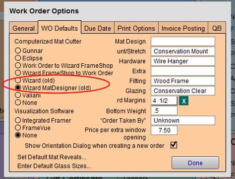
© 2023 Adatasol, Inc.